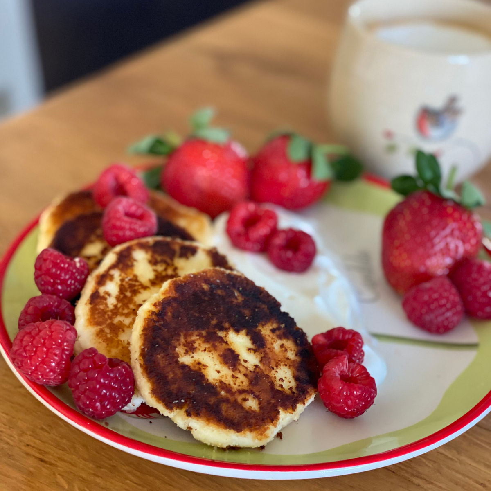
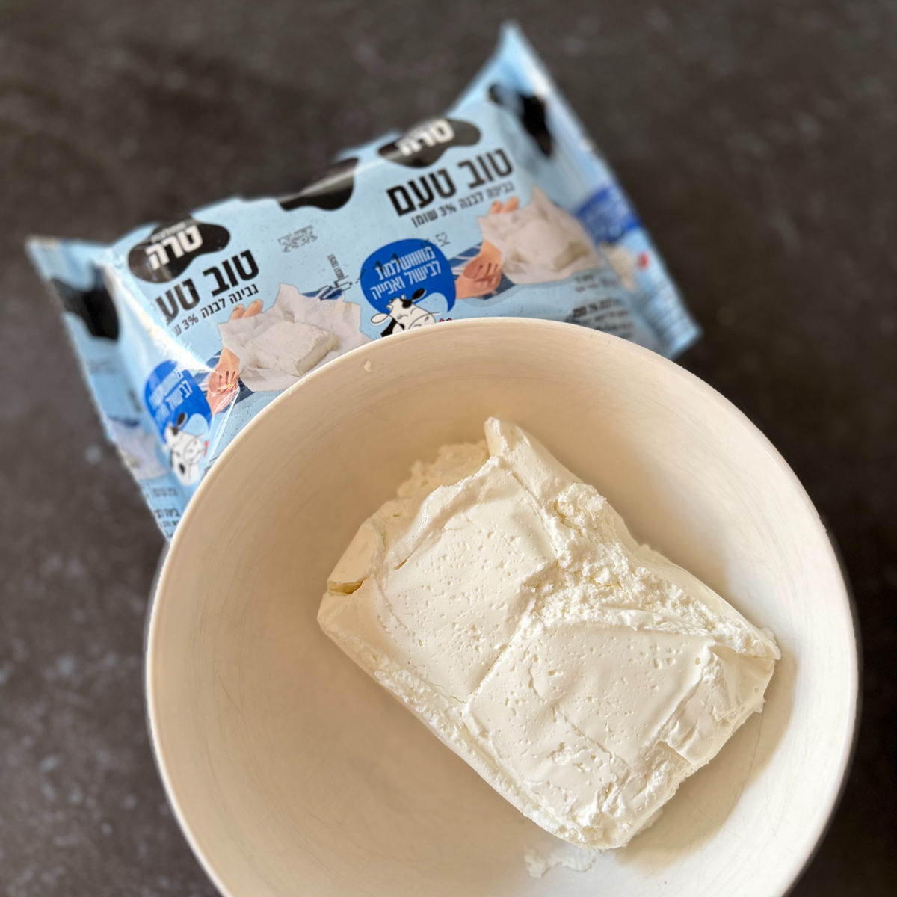
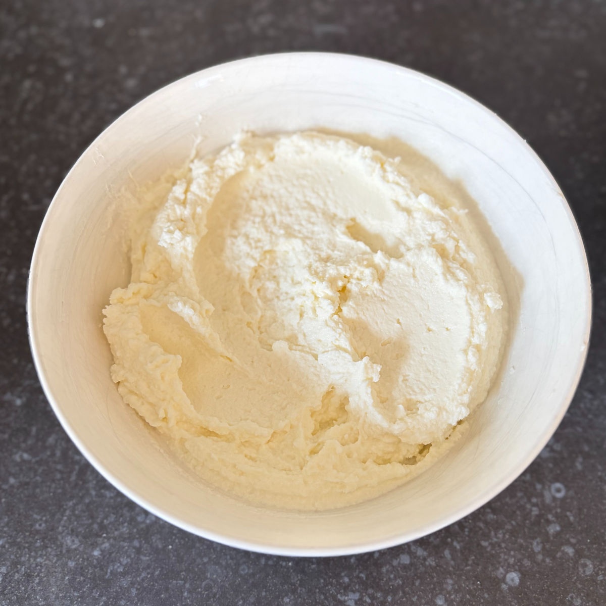
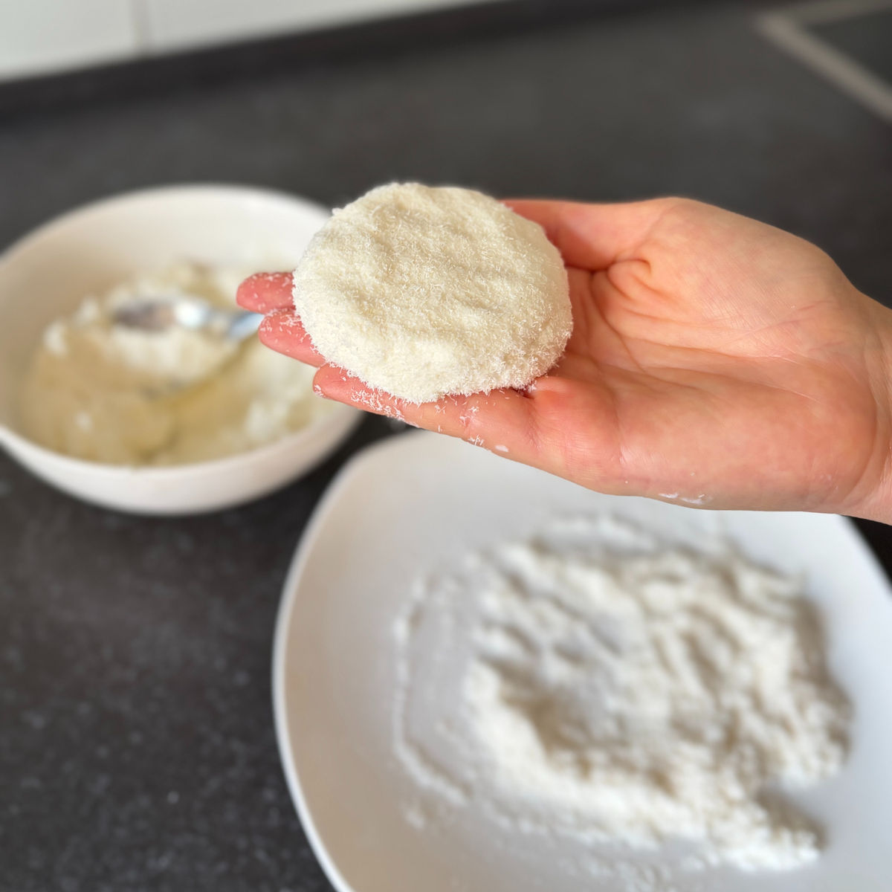

סירניקי \ לביבות גבינה ביתיות
עודכן: 22 באפר׳
טבלת ערכים תזונתיים בקירוב:
שימו לב שזו טבלה עבור המתכון עם ממתיק סוויטאנגו
| ערכים | לביבה (65 גרם) | 100 גרם |
|---|---|---|
| קלוריות | 95.2 | 146.5 |
| פחמימות | 4.7 | 7.3 |
| חלבונים | 8.6 | 13.3 |
אני ואחותי הקטנה עדן משתדלות לבקר את סבתא כמה שיותר. אלו "ישיבות התה" הקבועות שלנו אחר הצהריים – זמן של קישקושים, התייעצויות ופשוט להיות יחד. על השולחן תמיד מחכה משהו טעים ליד התה, לפעמים מאפה של סבתא ולפעמים קינוח בריא שאני הבאתי, אבל הדבר שסבתא מכינה הכי הרבה הוא ה"סירניקי" – לביבות גבינה רכות ומושלמות.
באחד הביקורים ביקשתי ממנה את המתכון וגיליתי כמה הוא פשוט. באותו רגע הבנתי שזה ממש קל להפוך אותו לבריא ומזין. אחרי כמה ניסיונות במטבח, הגעתי לגרסה המדויקת של הלביבות האלו.
סבתא, אני אוהבת אותך המון ומקווה שישיבות התה שלנו ימשיכו להוות לי השראה.

מתכון:
כמות: 6 לביבות
מרכיבים:
1 חבילה של טוב טעם 3% (250 גרם) או גבינת טבורוג
1 ביצה L
2.5 (35 גרם) כפות סוויטאנגו / 40 גרם דבש (שימו לב: דבש אינו מתאים לסוכרתיים ולקיטוגנים)
3 כפות קמח קוקוס
1 כף קמח קוקוס לציפוי
שמן קוקוס לטיגון
הוראות הכנה:
מחממים מחבת על אש בינונית עם שמן קוקוס או חמאה (במידה ובחרתם חמאה שימו לב שהיא לא תשרף).
מערבבים יחד את כל המרכיבים בקערה. לאחר מכן מקמחים משטח באמצעות קמח קוקוס ומקמחים קלות את ידיכם.
לוקחים כדור בגודל של קצת יותר מכף ומניחים אותו על המשטח המקומח, יש ליצור ממנו צורת לביבה.
יש לקחת את הלביבות ולהניח אותן על המחבת החמה. יש לצלות כל לביבה כ 3 דקות עד שהבלילה יחסית יציבה וכשהופכים אותה החלק התחתון צרוב בצבע חום. הופכים את הסירניק ומבשלים אותו על צדו השני עד שהוא משחים.
סרטון מתהליך ההכנה:
לינק לסרטון קצר
תמונות מתהליך ההכנה:

גבינת הטבורוג שאני משתמשת בה

מראה סופי של הבלילה

הכנת לביבות מהבלילה
טיגון הסרניקי